How Dr. Reyes planned a chemo cycle without decoding it
Dr. Reyes orders chemotherapy as a regimen: four cycles of pemetrexed and cisplatin, each with premeds, labs and treatment days that don’t always match. In the legacy system she read that plan as a grid of offsets, T-30 min or T+4 h, split across phases she opened one at a time. She never questioned it. She had learned it.
My role
I designed the regimen and day-of-treatment views for a new EHR, from choosing a regimen to signing a cycle, and the dose calculator with the PM. Engineering was already building a first version, so most of my work was architecture and prioritization inside that build: what lives at the regimen, cycle and day level, what sits face-up on a dense screen, and the rules the team implemented.
NR
Dr. Nadia Reyes, MD
Medical oncologist
Her week
Sees patients in clinic, orders regimens, and signs cycles between visits.
Works with
Infusion nurses, oncology pharmacists and schedulers.
Needs
To prescribe a regimen, set up each cycle and adjust doses, so the plan is ready for safe administration.
Composite persona, based on oncology workgroups and sessions with clinical SMEs.
Where it landed
Shipped
Regimen and day-of-treatment views, in release when I left in September 2026.
Adopted
My sign-and-start rules became the base engineering built on.
Open
The cycle setup behind “Start”, which clinicians asked to hide.
02. The challenge
A screen she trusted out of habit
Change it too much and Dr. Reyes stops trusting it. Change it too little and the offsets stay.
Three groups pulled in different directions. Clinicians in our workgroups wanted the legacy structure kept. Design leadership wanted us to go well beyond it. Engineering had already started its own version for the release, with protocol orders on the left and one column per treatment day.
The problem
How might we decide what Dr. Reyes sees at each level of a regimen, so a dense plan stays readable without hiding what she relies on?
I set a plain bar for it: a view she would trust on day one, on rules engineering could ship.
Three things made this hard:
01
Five levels deep
Regimen, cycle, phase, day and order.
02
Every field matters to someone
Little could be removed, only reordered.
03
A build in motion
Engineering was already coding.
03. Key decisions
Two calls about where information lives
We made both before drawing a screen, starting from how the legacy system was organized.
01. Keep the grid
The columns were right.
On Day 8, Dr. Reyes may drop cisplatin and keep the rest. That’s why the legacy screen gave each treatment day its own column, and why I kept it: protocol orders on the left, days on the right. It was also close to what engineering had already built, which kept it shippable.
What I changed was priority, not structure. Offsets became estimated times anchored to the chemo start, so a premed reads 7:30 AM instead of T-30 min. The whole cycle scrolls as one page, with no phase to open.
Based on Legacy audit · Workgroup feedback
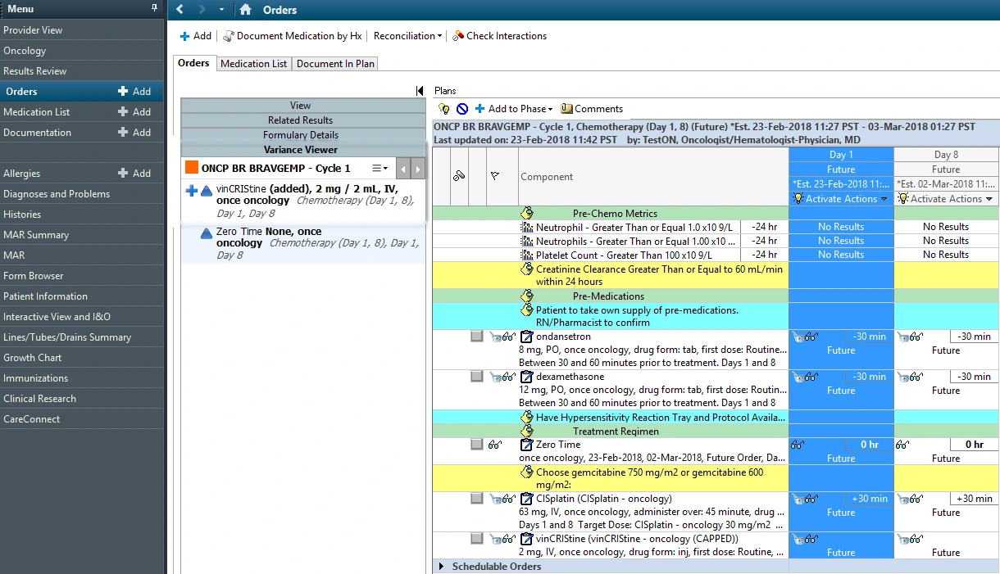
The legacy day-of-treatment view: offsets in every cell and colored bars as section headers. Public screenshot.
02. Move the calculator up a level
From one medication to the whole day.
In the legacy system, Dr. Reyes adjusted doses one medication at a time: open the order, open its calculator, close it, move to the next. She never saw a day’s doses side by side, or which ones she could still change.
Before we drew anything, the PM and I decided the calculator would live at the day-of-treatment level. It lists every dose-based order with its target dose, BSA and final dose, so a reduction like cisplatin at 80% sits next to the pemetrexed it’s given with.
Based on Legacy audit · Clinical SME review
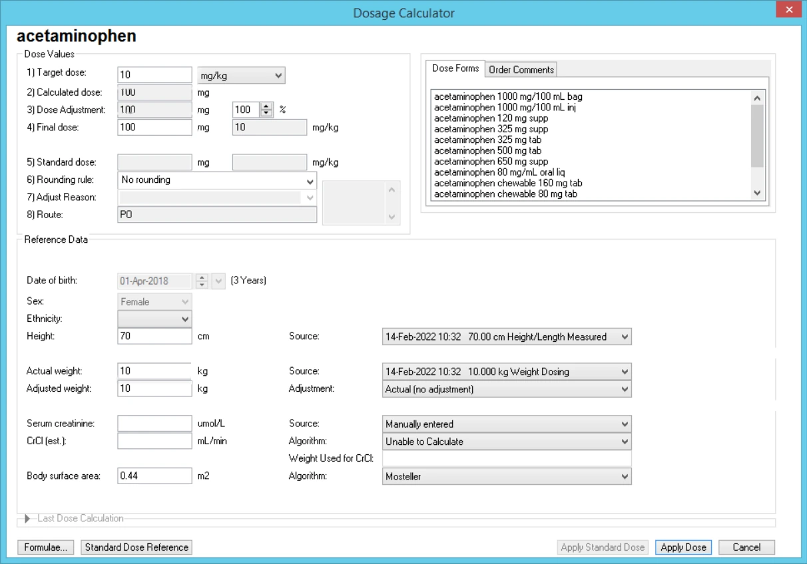
The legacy calculator: one medication per window. Public screenshot.
04. The flow
From a signed regimen to an adjusted dose
Click through what Dr. Reyes does: sign the regimen, start cycle 1, and lower a dose.
Dose calculations is a feature inside the day-of-treatment view. A clinical SME walked us through a case she sees often: cycle 4, day 1, cisplatin reduced for nausea and weight loss. The PM and I built the flow around it: every dose-based order in one drawer, the full calculation opening in place, and a reason required for any reduction.
I scoped it to oncology and left it as a reference for teams like pediatrics, where weight-based doses matter just as much: the same pattern, with their own formulas.
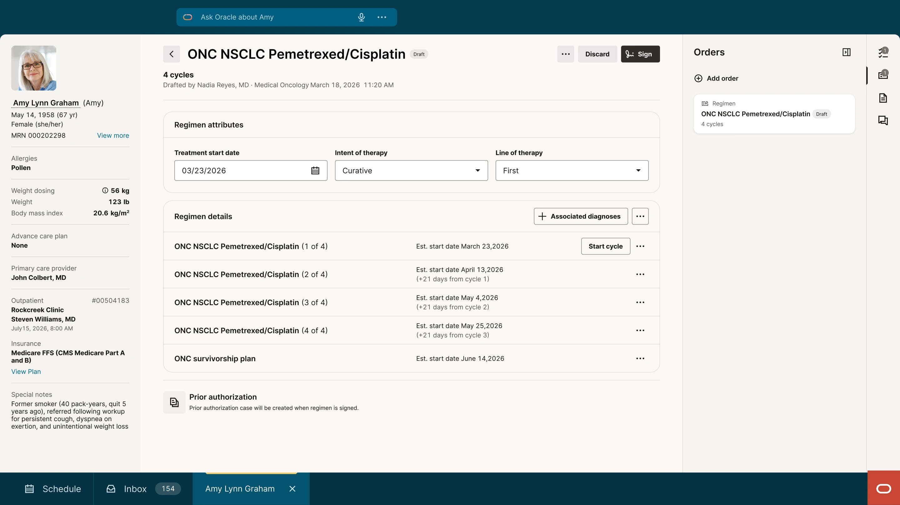
The regimen draft: its attributes on top, its four cycles below. Dr. Reyes starts by linking the diagnosis.
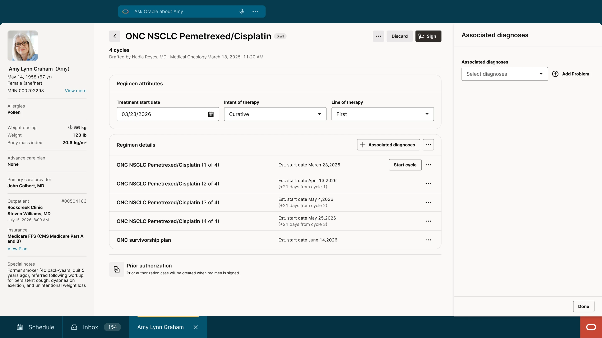
Associated diagnoses opens in the side panel, so the regimen stays in view.
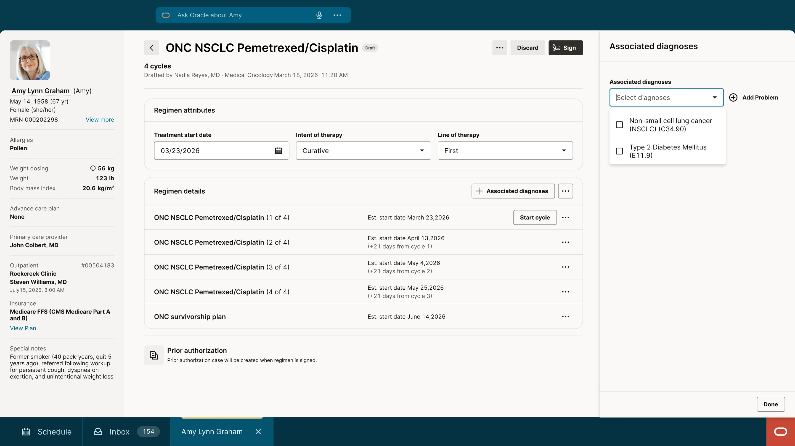
She picks from the patient’s own problems, not a search across every code.
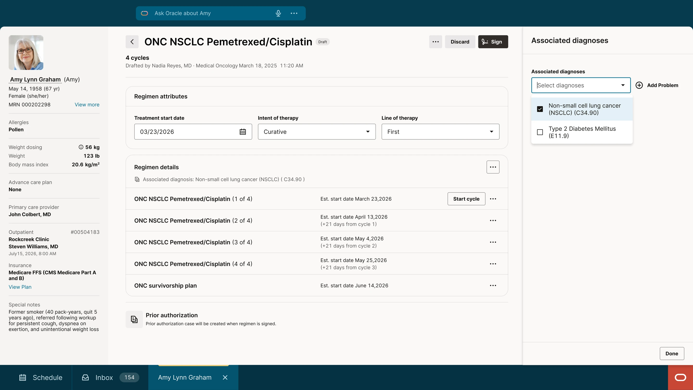
The diagnosis shows up in Regimen details right away.
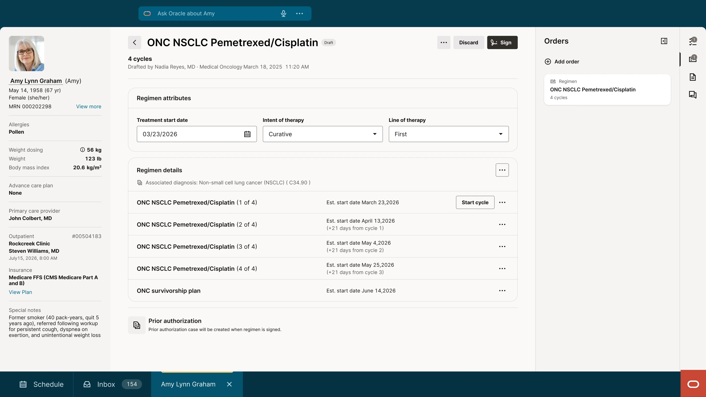
With the attributes complete, she can sign the regimen on its own: one of the rules from the flowchart.
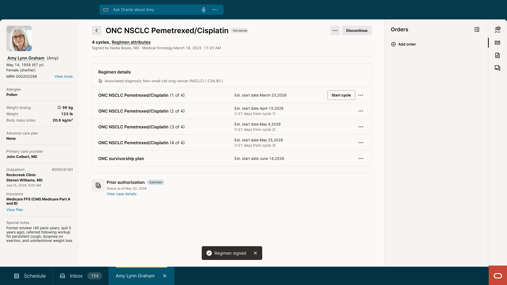
Signing sends prior authorization in parallel. Now she starts cycle 1.
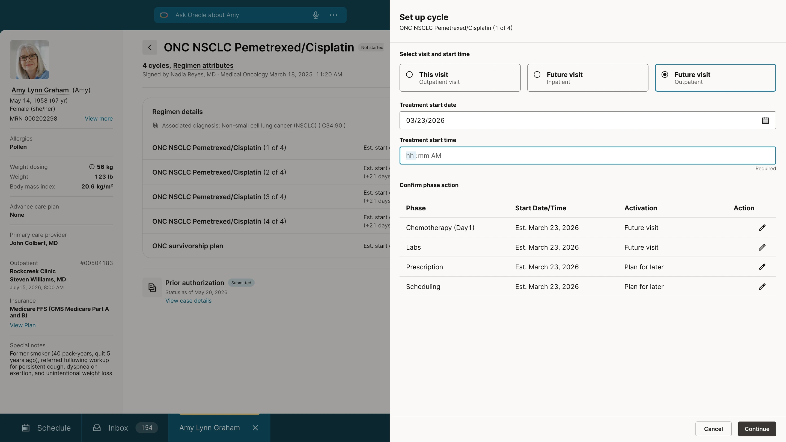
“Start” opens the setup screen clinicians later asked us to hide: visit type, start time and phase actions, with defaults that are almost always right.
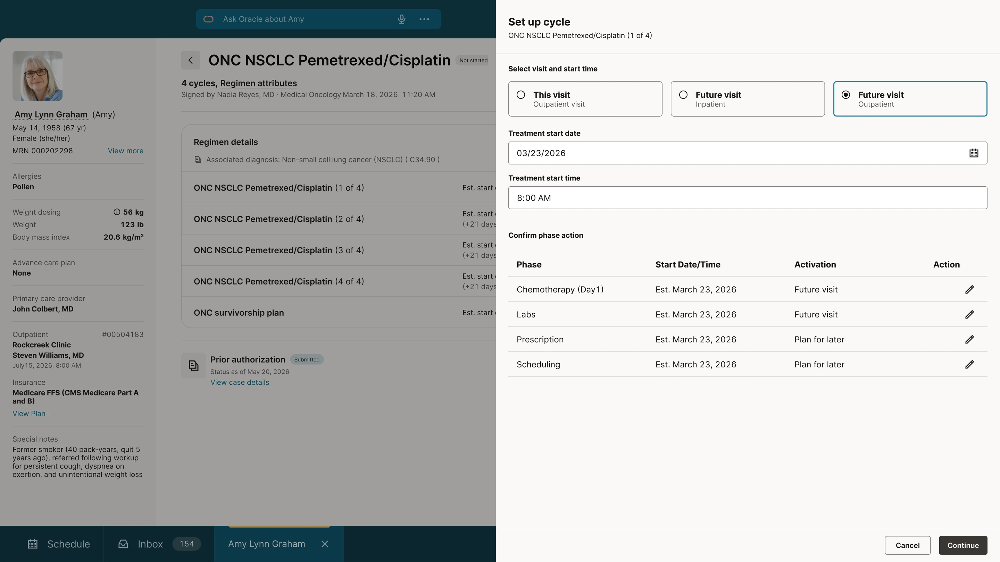
Start time set to 8:00 AM: it anchors every estimated time in the cycle.
The cycle opens as one page: orders on the left, Day 1 on the right with an estimated time for each. Dose calculations sits under the title.
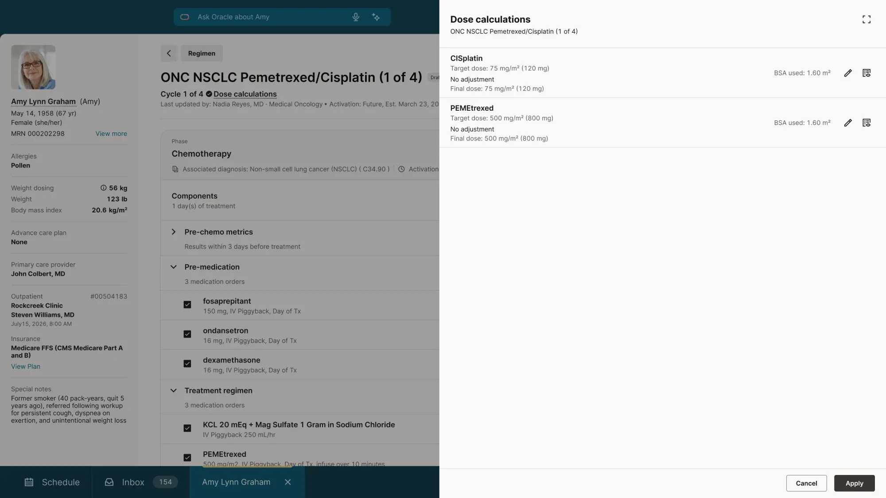
Every dose-based order in the cycle, side by side, with the BSA each one used. No more one window per medication.
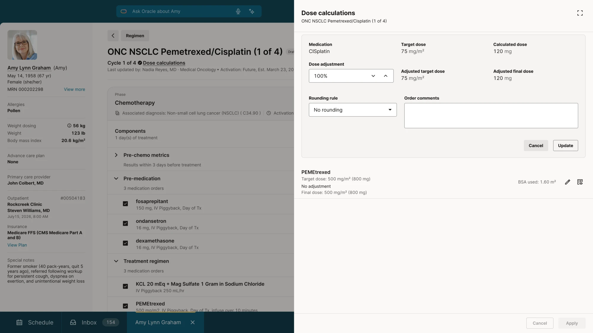
Editing cisplatin opens its full calculation in place. Pemetrexed stays in view, and Apply waits until she’s done.
Any reduction asks for a reason, and the adjusted dose updates as she changes it.
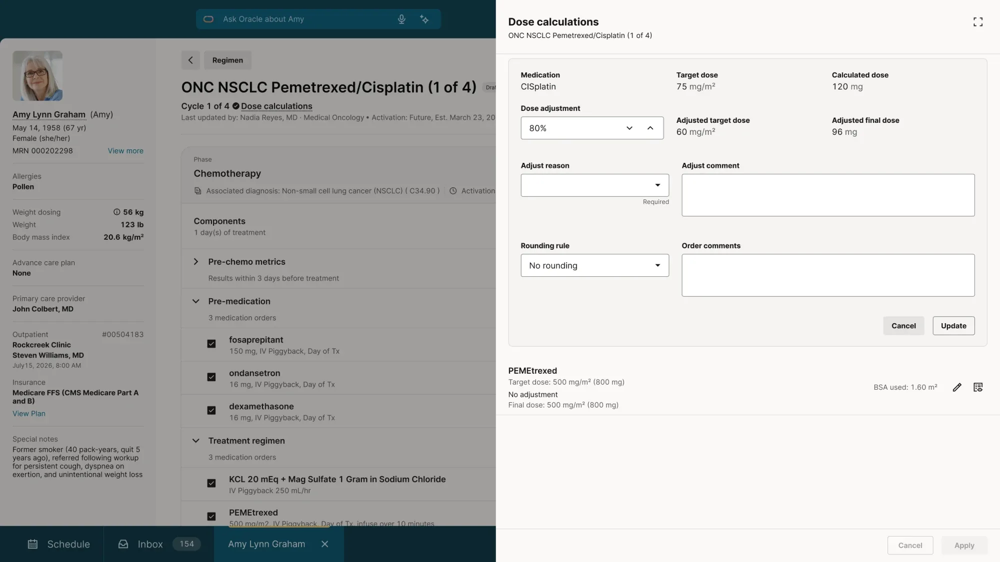
At 80%, cisplatin drops to 96 mg. She can’t update until she says why.
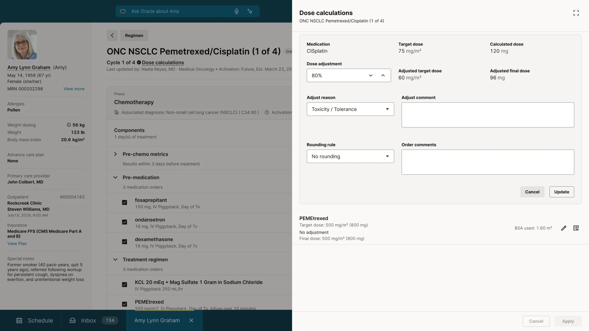
She picks Toxicity / Tolerance. The reason travels with the dose, so nursing and pharmacy see why it changed.
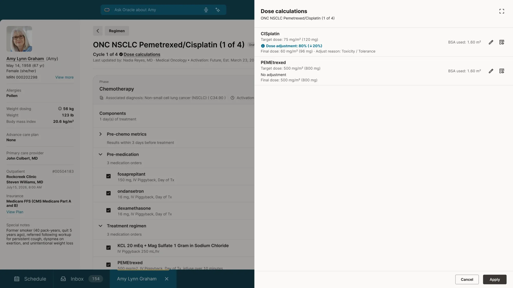
The reduction stays visible in the list: 80% (↓20%), the final dose and the reason, next to pemetrexed at full dose.
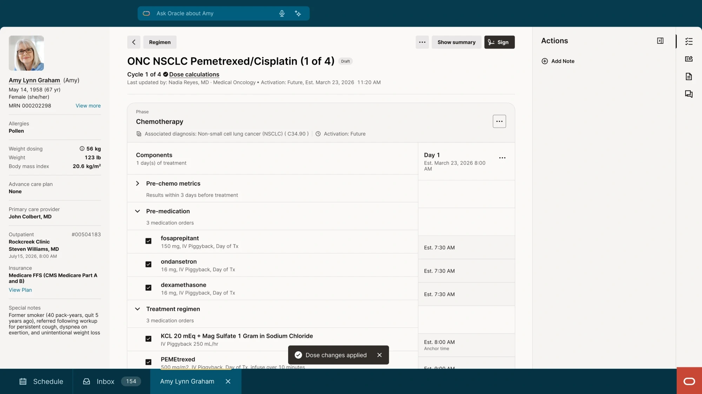
Back on the day of treatment, cisplatin carries the reduction in its own row: 80% (↓20%), the final dose and the reason, for nursing and pharmacy to see.
05. Making it buildable
The rules came from engineering’s questions
By late June, the same questions kept coming back.
Can Dr. Reyes start a cycle before the regimen is signed? What happens if a draft already exists? Which alerts stop her from signing? Each answer lived in a different thread, and every new screen raised them again.
I wrote them down in one flowchart, on top of the statuses the legacy system already used. The PM helped me walk the team through it, and engineering used it as the base for the build.
01
One signature for both
Signing a cycle signs the regimen too.
02
Drafts resume, never duplicate
Starting a cycle reopens the draft she left, instead of creating a second one.
03
Only critical alerts block
Critical alerts stop signing; pending ones don’t.
04
Attributes come first
A regimen can’t be signed or started until its attributes, like intent or line of therapy, are complete.
Try the flow
Two ways to sign, one set of rules
Pick a path, then press Yes or No to follow it.
100%
Redrawn from my original flowchart. Pills are Dr. Reyes’ actions, diamonds are system checks. Pending alerts never block signing; critical ones do.
06. Validation
What the workgroups told us
Clinicians like Dr. Reyes, and the people who build and support her regimens.
I brought the designs to oncology workgroups with oncologists, pharmacists and informaticists from academic, community and cancer centers. Most of what they said confirmed the grid. One request changed how sections read, and one finding changed how I see the whole flow.
Status per day earned its place
An informaticist who supports an infusion center told us status is the first thing she checks when an order fails, and that staff there are trained to look for the word “Future”. We kept the word.
One scroll beat opening phases
Two clinicians said scrolling the whole cycle was easier than hopping between phases. They also flagged the empty space between orders and days: with Days 1, 8 and 15 it would force a sideways scroll, so we tightened the columns.
What changed after the first session
Hierarchy, not color
Clinicians said the sections blended together and asked for the colored notes from the legacy screen. I tried color, and the design system team advised against it: its principles keep color for meaning, not decoration. In the old grid, green, teal and yellow bars did the work of headings, on the same screen as allergy and interaction alerts.
I rebuilt the hierarchy with type instead: category names in semibold with their order count, orders in regular weight, notes in a quieter style. Color stayed free for alerts, where it has to stand out.
The finding that stayed with me
The button nobody understood
In April I questioned “Start”. It only opened the cycle for review, so I proposed “View cycle”. Product kept “Start” because it was the term everyone knew.
The workgroups brought it back. Behind “Start” sat a setup screen with visit types and phase actions (step 7 in the walkthrough above). One organization tells its oncologists never to touch it; another has seen a lab phase removed by accident. Regimens follow national guidelines, so the defaults are almost always right, yet the screen presented each one as a decision. Clinicians asked to hide it.
07. Outcome
The views shipped, the setup screen didn’t change
Dr. Reyes can read a cycle by day and by time.
When I left in September 2026, the regimen and day-of-treatment views were in release, built on the rules flow, and the day-level dose calculator was in development. The PM and the clinical SMEs were especially keen on it. When Dr. Reyes clicks “Start”, she still meets the setup screen she was taught not to touch.
08. Reflection
What I’d do differently
Bring evidence to word debates
I argued “Start” with an opinion. The clinician evidence came in July; I’d have asked for it in April.
Draft the rules with engineers
The flow landed once the PM and I walked the team through it. Writing it with them would have saved that step.
Test one bolder idea early
I explored a view focused on the active day and kept it as an exploration. I’d have put it in front of clinicians anyway.